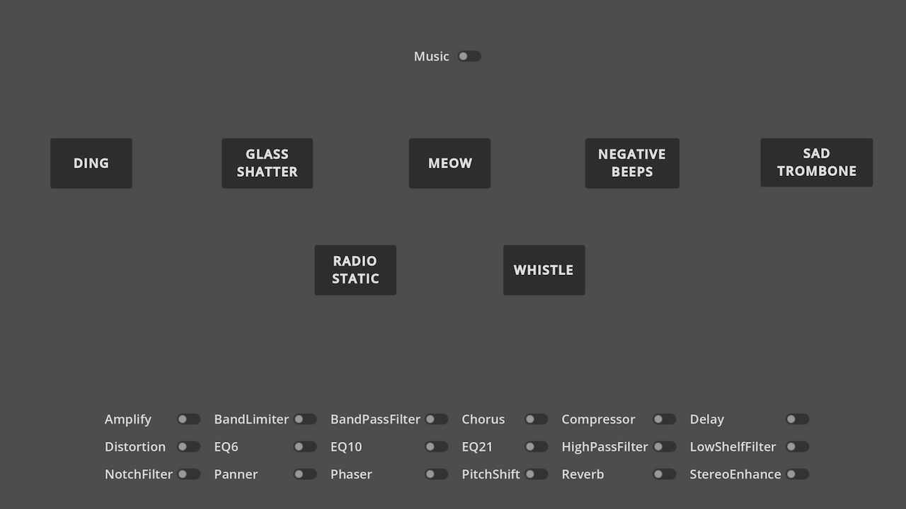
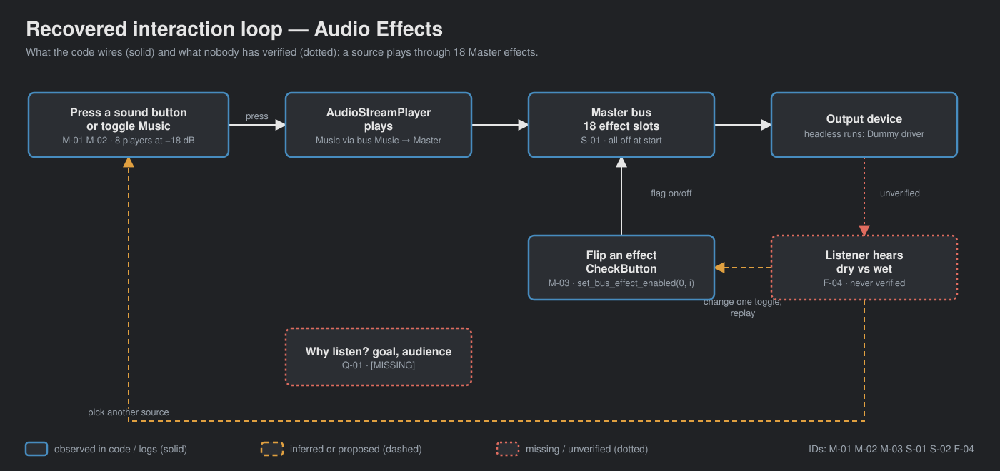
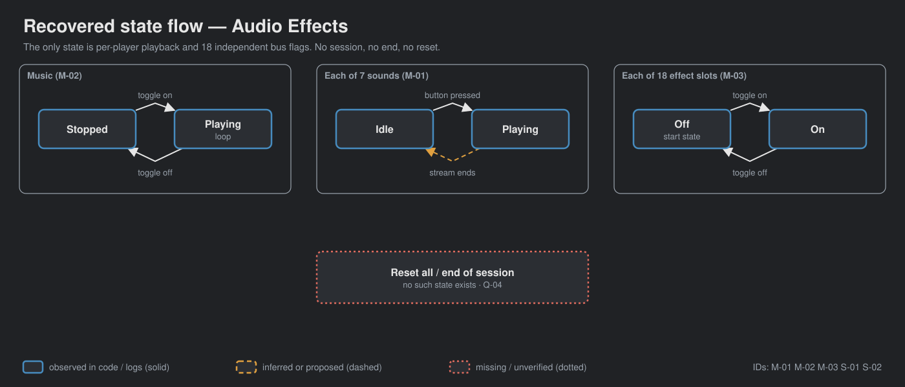

A local copy of Godot's Audio Effects demo: seven sounds, one music track, eighteen Master-bus effects. It is a tech demo, not a game.
OBSERVED in code or logs INFERRED implied, evidence stated MISSING nobody has decided
No gate signed. No human listening test. Arrow keys or space to advance.

OBSERVED godot/screenshots/audio_effects.webp ships with the upstream demo. It is not a local capture; CAPTURE-PLAN.md says no capture has been recorded.
→ GDD §1–2


| Check | Result |
|---|---|
| 18 toggles flip and restore their bus flag (mouse) | 18/18 |
| 7 sound buttons start their players; music starts/stops | 7/7 · true/true |
| EQ6/10/21 band gains | all 0 dB |
| Audible dry/wet difference | not tested |
Headless Godot 4.7.2, Dummy audio driver. FRICTIONAL.md 2026-09-19..20.
EQ6, EQ10 and EQ21 are flat. Enabling them changes no band. OBSERVED test_eq_defaults.gd
Source values worth hearing: Amplify +5 dB · PitchShift 0.75 · Panner hard left · Distortion drive 0.5 · Compressor −24 dB. OBSERVED default_bus_layout.tres
Q-01 What is this copy for, and who is it for? Q-02 lesson order · Q-03 priorities · Q-04 wanted additions · Q-05 flat EQs · Q-06 film success criterion.
Ghost Center and Mechanic Mirage: present, as expected. The design question here is not the core loop; it is what someone should be able to hear and name afterwards. Answer Q-01 first.